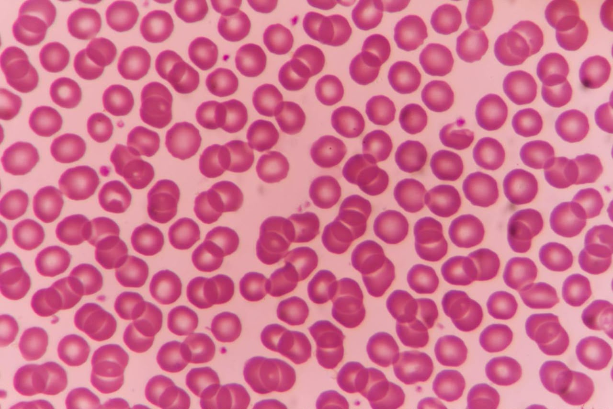
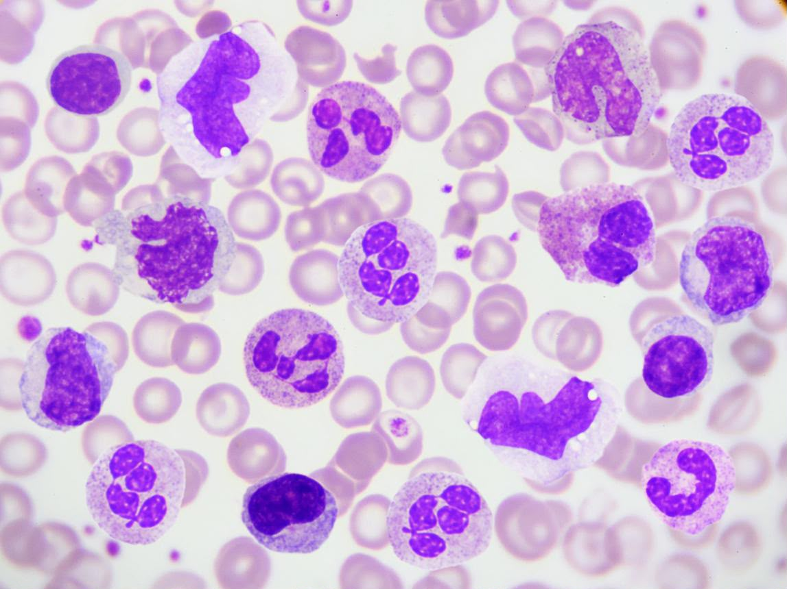
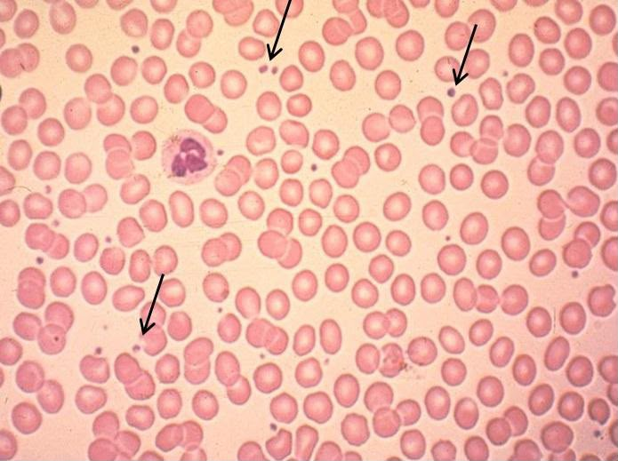

Comparison of Blood Cells
| Blood Component | Main Function | Nucleus |
|---|---|---|
| Red Blood Cells | Transport oxygen | Absent when mature |
| White Blood Cells | Defend against infections | Present |
| Platelets | Help blood clot | Absent |
Why Are Blood Cells Important?
Red blood cells, white blood cells and platelets work together to maintain good health. Red blood cells transport oxygen, white blood cells protect the body against infections, and platelets help prevent excessive bleeding. Together, they support the normal functioning of the human body.
1. Red Blood Cells (Erythrocytes)

Introduction
Red blood cells are specialised blood cells that transport oxygen from the lungs to different parts of the body. They contain a protein called haemoglobin, which gives blood its red colour.
Structure and Characteristics
- They have a biconcave disc shape.
- They contain haemoglobin.
- Mature red blood cells do not have a nucleus.
- They are produced in the bone marrow.
Main Functions
- Transport oxygen to body tissues.
- Carry some carbon dioxide back to the lungs.
- Help maintain the body's acid-base balance.
Interesting Fact
A typical red blood cell lives for approximately 120 days before it is removed from circulation.
2. White Blood Cells (Leukocytes)

Introduction
White blood cells are important components of the immune system. They protect the body against infections and help fight harmful microorganisms such as bacteria, viruses and fungi.
Structure and Characteristics
- They have a nucleus.
- They do not contain haemoglobin.
- They are generally larger than red blood cells.
- They are produced mainly in the bone marrow.
- Some can move through blood vessel walls into body tissues.
Main Functions
- Defend the body against infections.
- Recognise and destroy harmful microorganisms.
- Produce antibodies to help fight specific infections.
- Take part in the body's immune response.
Interesting Fact
White blood cells are not all the same. They have different types, including neutrophils, lymphocytes and monocytes, and each type has a special role in protecting the body.
3. Platelets (Thrombocytes)

Introduction
Platelets are small cell fragments found in the blood. They play an important role in preventing excessive bleeding when a blood vessel is injured.
Structure and Characteristics
- They are much smaller than red and white blood cells.
- They are cell fragments rather than complete cells.
- They do not have a nucleus.
- They are produced from large bone marrow cells called megakaryocytes.
Main Functions
- Help stop bleeding when blood vessels are damaged.
- Gather at an injury site to form a temporary platelet plug.
- Release substances that support blood clotting.
- Help with the repair of damaged blood vessels.
Interesting Fact
Platelets usually circulate in the blood for about 7 to 10 days before they are removed, mainly by the spleen and liver.